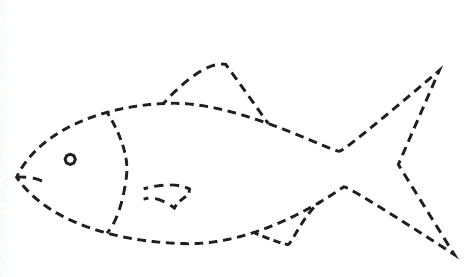
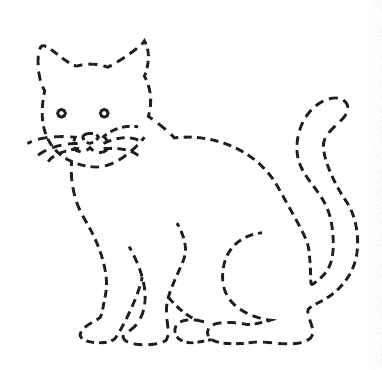

Unit One - Lesson 3: Drawing pictures of objects
Lesson 3
Drawing pictures of objects
Draw, identify, or describe the fish; explore a real object or teacher-provided tactile graphic before answering.

Draw, identify, or describe the cat; explore a real object or teacher-provided tactile graphic before answering.

Draw, identify, or describe the table; explore a real object or teacher-provided tactile graphic before answering.

Draw, identify, or describe the chair; explore a real object or teacher-provided tactile graphic before answering.

Draw, identify, or describe the cup; explore a real object or teacher-provided tactile graphic before answering.

Draw, identify, or describe the bottle; explore a real object or teacher-provided tactile graphic before answering.